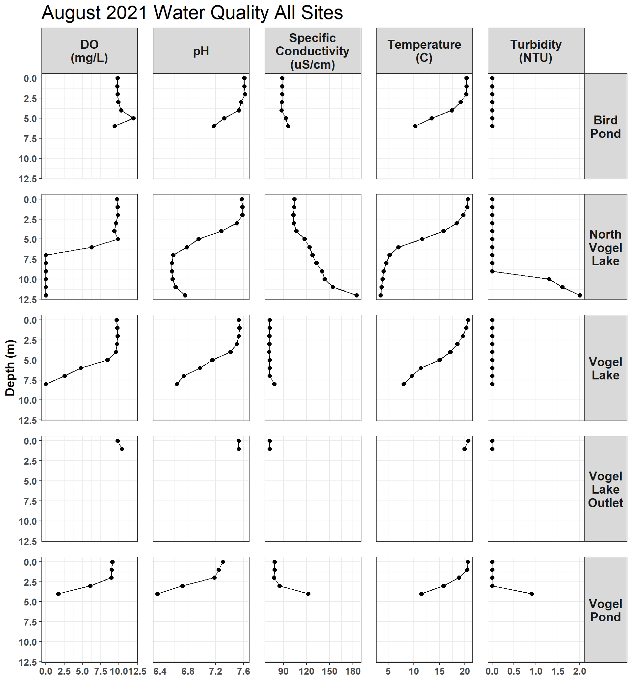
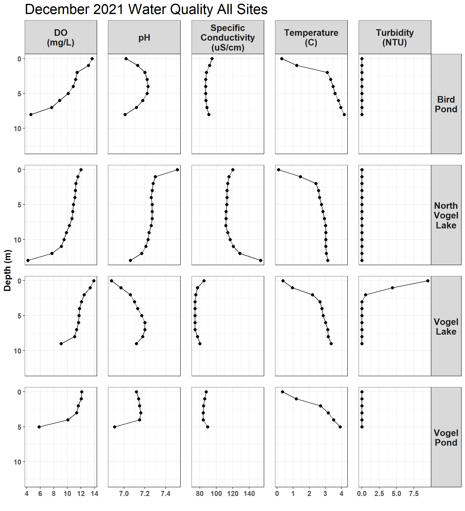

2 Lake Water Quality Profiles
Lake water quality profiles were collected at 1-2 month intervals at five sites at 1 meter depth intervals. Hydrolab MS5 sondes were descended from an anchored boat centered over the deepest point of each lake.
Raw water quality field data is stored in a Google Sheet that can be viewed at https://tinyurl.com/kwf-vogel-wqx-data.
Data visualizations are provided for each site visit here.
2.1 Data by Month
2.1.1 January 2021
Jan 22, 2021
p
2.1.2 March 2021
March 23, 2021
p
2.1.3 May 2021
May 25, 2021
p
2.1.4 June 2021
June 29, 2021
p Note: turbidity data is absent from June 2021 sampling due to an equipment issue.
Note: turbidity data is absent from June 2021 sampling due to an equipment issue.
2.2 Overall Data
2.2.1 Time vs. Lake Depth by Site and Parameter
# plot
p <- lake_wqx_dat %>%
filter(parameter == "DO_mgl") %>%
ggplot(aes(month,sample_depth_m)) +
geom_tile(aes(fill = val)) +
scale_y_reverse() +
facet_grid(. ~ site,
labeller = labeller(site = site_names), scales = "free_x") +
ylab("Depth (m)") +
xlab("") +
scale_x_continuous(breaks = lake_wqx_dat$event_sequence,
label = lake_wqx_dat$sample_date) +
theme_bw() +
points_theme +
theme(axis.text.x=element_text(angle=90, vjust=.5)) +
scale_fill_viridis_c(name="mg/L")2.2.1.1 Dissolved Oxygen
Work in progress here 8/6/2021
p# ISSUE - x axis labels and bars do not line upPlan:
create summary table of values present hydro measurements in table for each parameter, create tile plot of depth vs value:
2.3 Site Summaries
A table of summary statistics for water quality parameters at each site will be provided here.